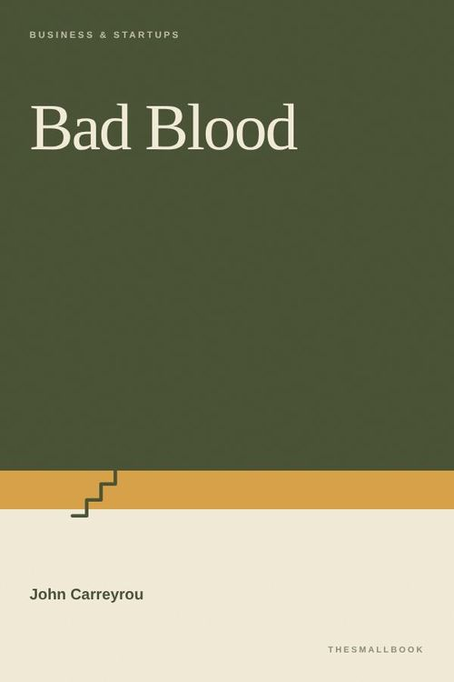

Why Did Gawker Fail?
One lawsuit ended the empire
What happened
Gawker defined a snarky internet media era and built a profitable empire around gossip, media criticism and stories other outlets feared to touch. Its voice shaped a generation of digital writers. A privacy lawsuit backed by Peter Thiel over the Hulk Hogan sex tape produced a huge judgment. Gawker Media filed for bankruptcy, sold its other sites, and Gawker.com itself was shut in 2016.
The fatal mistake
Treating legal and ethical risk as a brand asset until one case collected the debt.
The lesson
A business model that profits from enemies must price the day an enemy can fund the fight.
The antidote book

A $9 billion company built on a machine that didn't work - and the culture of fear, NDAs, and famous names that kept the secret for a decade.
READ THE SUMMARY OPEN INTERACTIVE BOOKQuestions people ask about Gawker
Why did Gawker fail? Treating legal and ethical risk as a brand asset until one case collected the debt.
How much was lost? Bankrupt and shut in 2016
What is the lesson? A business model that profits from enemies must price the day an enemy can fund the fight.
Gawker kyun fail hua? In simple English: Treating legal and ethical risk as a brand asset until one case collected the debt. The cost was Bankrupt and shut in 2016.
Keep digging
More fame and fortune failures · Open the full Graveyard
Read the antidote book summary: Bad Blood
Related failures
- Why did Yeezy fail? 2022 · One Month of Statements Turned a $1.5 Billion Partnership Into a Write-Off
- Why did Rana Kapoor fail? 2020 · 'Diamonds Are Forever' - Loans Weren't
- Why did Q Magazine fail? 2020 · The music monthly closes
- Why did V.G. Siddhartha fail? 2019 · The Coffee King Who Carried It Alone
- Why did Johnny Depp fail? 2017 · $30,000 a Month on Wine
- Why did Maria Sharapova fail? 2016 · A Diabetes Drug, a Missed Email, and $200 Million of Endorsements
Questions people ask about Gawker
Why did Gawker fail? Treating legal and ethical risk as a brand asset until one case collected the debt.
How much was lost? Bankrupt and shut in 2016
What is the lesson? A business model that profits from enemies must price the day an enemy can fund the fight.
Gawker kyun fail hua? In simple English: Treating legal and ethical risk as a brand asset until one case collected the debt. The cost was Bankrupt and shut in 2016.
Keep digging
More fame and fortune failures · Open the full Graveyard
Read the antidote book summary: Bad Blood
Related failures
- Why did Yeezy fail? 2022 · One Month of Statements Turned a $1.5 Billion Partnership Into a Write-Off
- Why did Rana Kapoor fail? 2020 · 'Diamonds Are Forever' - Loans Weren't
- Why did Q Magazine fail? 2020 · The music monthly closes
- Why did V.G. Siddhartha fail? 2019 · The Coffee King Who Carried It Alone
- Why did Playboy and the Empire the Internet Retired fail? 2017 · The Empire the Internet Retired
- Why did Johnny Depp fail? 2017 · $30,000 a Month on Wine
They paid full price. You get the lesson in simple English.